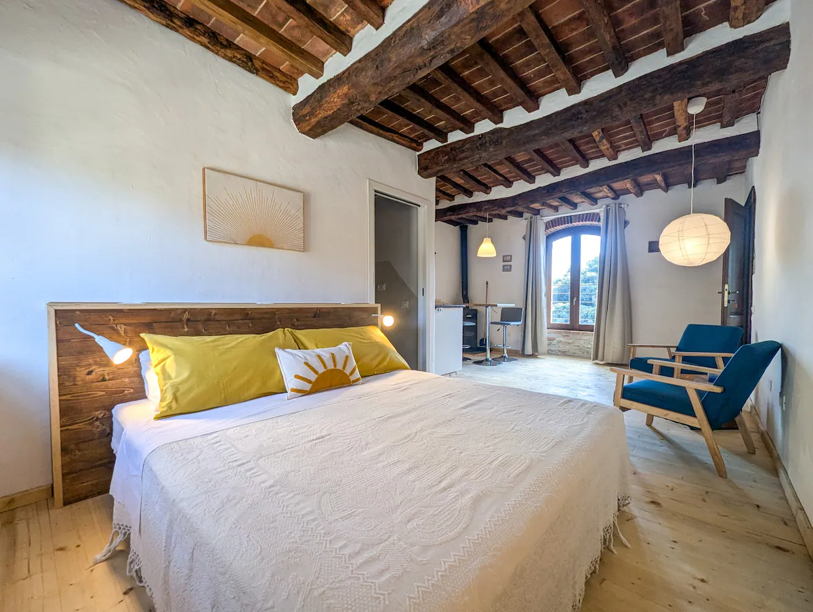
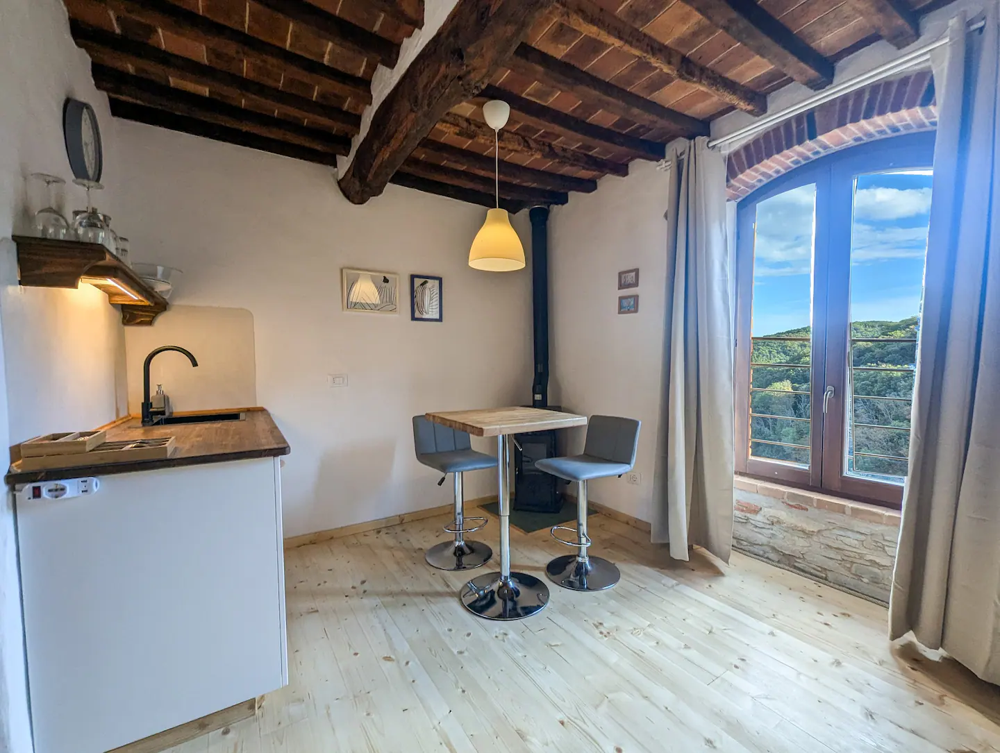
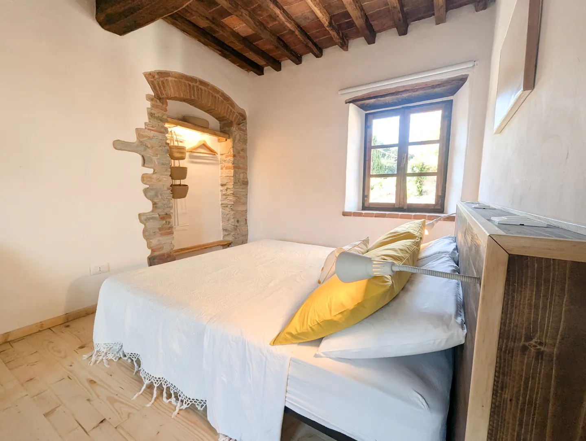
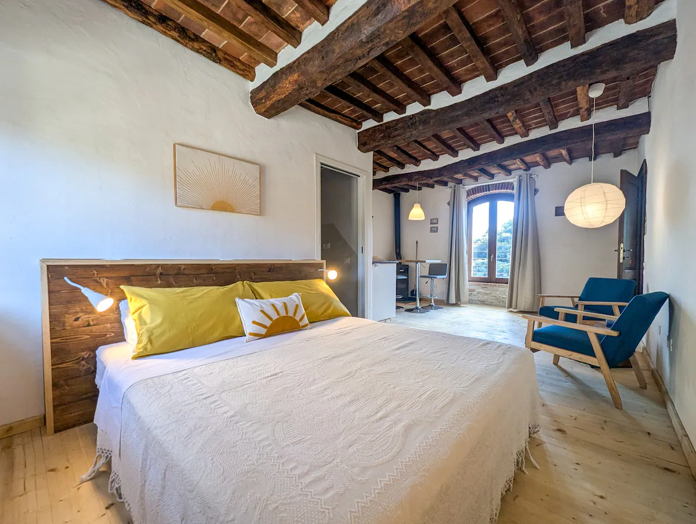
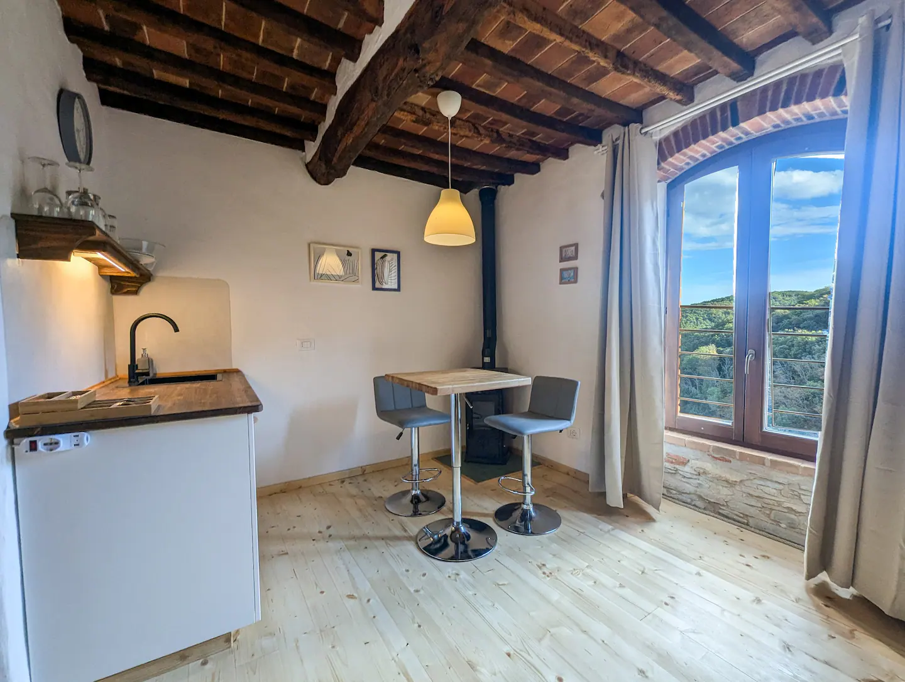
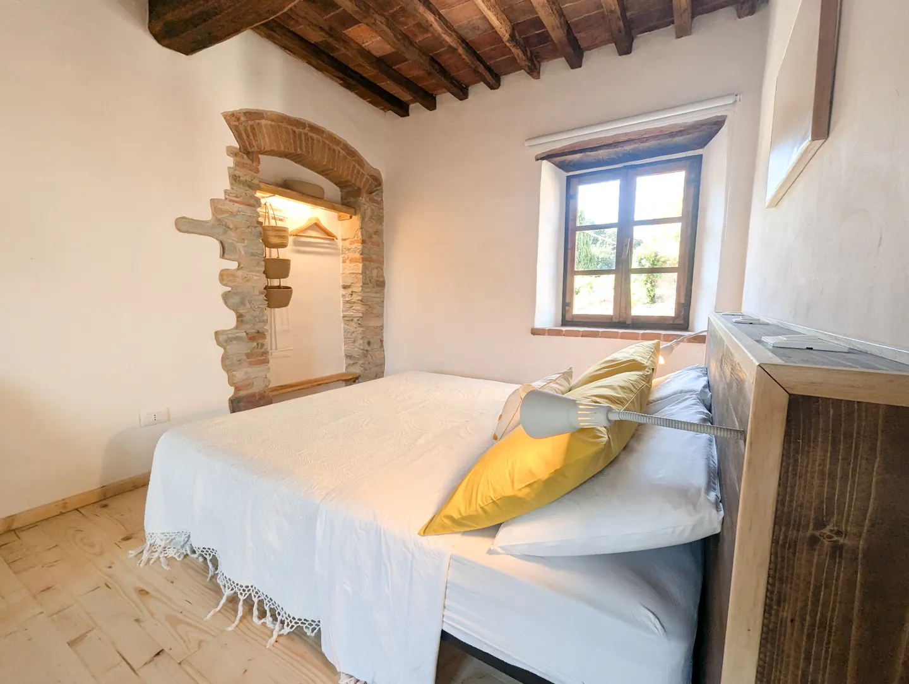

Über diese Unterkunft
"La Camera Drago"- Zimmer mit eigenem Bad, kleiner Kochbereich mit Wasserkocher, Waschbecken , Kühlschrank und Kaminofen zum Aufwärmen in den kälteren Monaten. Ideal für einen Aufenthalt, um Sassetta und Umgebung zu entdecken, oder für einen Besuch der Terme di Sassetta (Rabatt für unsere Gäste verfügbar) Das Zimmer ist Teil der Zimmervermietung " Il Palazzo", aufgeteilt in drei unabhängige Zimmer mit eigenem Bad und mit Wohnbereich und großer Gemeinschaftsküche mit Blick auf die mediterrane Macchia.
Die Unterkunft
Jedes Zimmer der Zimmervermietung " Il Palazzo" wurde einzigartig eingerichtet und verfügt über einen Wohnbereich mit Waschbecken, Wasserkocher, Kühlschrank, Bereich für kalte Mahlzeiten und ein eigenes Bad , das vollständig aus Materialien des Bio-Gebäudes(Kalksteine, Calce und Pastellone) besteht. Das Anwesen befindet sich in der Ortschaft "Le Fornaci", einem Ortsteil von Sassetta, etwa 1 km vom Dorf entfernt, so dass Sie einen Aufenthalt im Zeichen der Entdeckung der umliegenden mittelalterlichen Dörfer (Massa Marittima ,Suvereto, Campiglia) und für Liebhaber von Trekking- oder Mountainbike-Strecken, die sich durch die mediterrane Macchia schlängeln, genießen können. Das Zimmer Drago und die Gemeinschaftsküche aller drei Wohnungen bieten neben einem Holzofen zum Aufwärmen in den umgekehrten Monaten.
Zugang für Gäste
Zimmer mit eigenem Bad mit Küche und gemeinsamer Wohnbereich für alle Gäste des " Il Palazzo". *Wir bieten unseren Gästen einen Rabatt für den Zugang zu den Thermen von Sassetta! *
Weitere wichtige Hinweise
Bettwäsche und Handtücher inklusive. Kurtaxe von 1,50 Euro pro Person, pro Übernachtung vor Ort zu zahlen ( über 12 Jahre) Nicht im Airb&B-Tarif enthalten.
 




